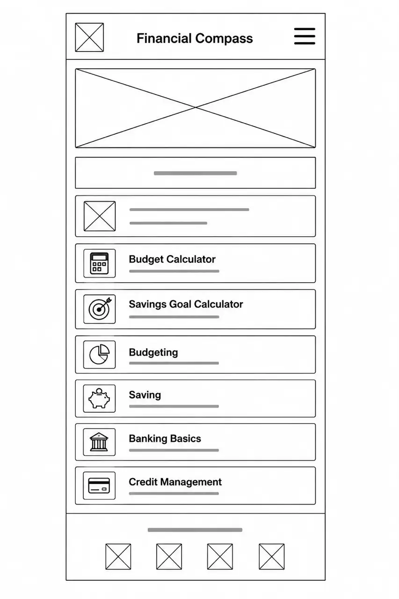
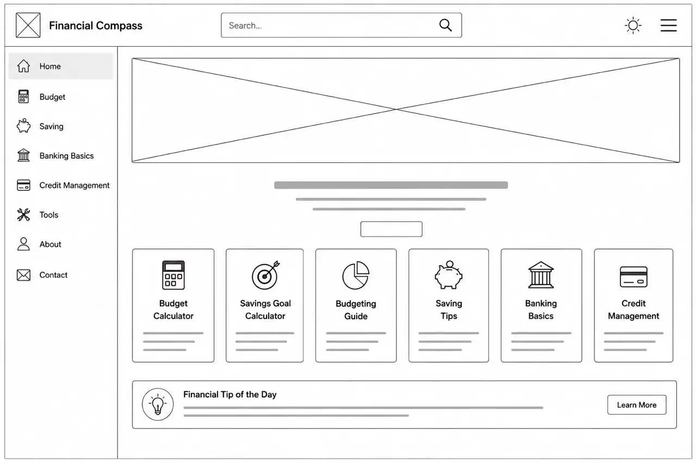

Roboto
Roboto will be used for the website headings, navigation menu, buttons, and call-to-action elements. Its modern and clean design creates a professional appearance while improving readability.
The name Financial Compass reflects the website's mission of guiding young professionals toward making informed financial decisions. Just as a compass provides direction, the website serves as a trusted guide to help users navigate budgeting, saving, banking, and responsible credit management throughout their financial journey.
Optional Domain: financialcompass.org
Financial Compass is an educational website designed to improve financial literacy among young professionals. The website provides practical information on budgeting, saving, banking basics, and responsible credit management. Visitors will also have access to interactive tools, including a Budget Calculator, Savings Goal Calculator, Financial Tip of the Day, and a Dark/Light Mode Toggle that enhances accessibility and user experience.
The selected color palette reflects trust, professionalism, and confidence— qualities commonly associated with financial education. The combination of blue, white, and charcoal provides a clean, modern appearance while maintaining good readability and accessibility.
| Color | Hex Code | Usage |
|---|---|---|
| Royal Blue | #0056B3 | Header, navigation, headings, footer, primary buttons |
| Sky Blue | #4DA3FF | Button hover effects, links, icons, highlights and accents |
| White | #FFFFFF | Main page background |
| Light Blue | #F4F9FF | Section backgrounds and content cards |
| Charcoal | #1F2937 | Body text and secondary text |
Roboto will be used for the website headings, navigation menu, buttons, and call-to-action elements. Its modern and clean design creates a professional appearance while improving readability.
Open Sans will be used for body text, forms, tables, lists, and general page content. It is highly legible on both desktop and mobile devices, making it ideal for an educational website.

